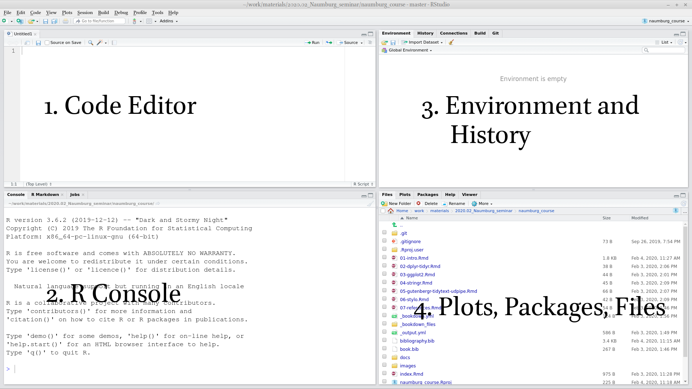

2 Introduction to R and RStudio
2.1 Introduction
2.1.1 Why data science?
Data science is a new field that actively developing lately. This field merges computer science, math, statistics, and it is hard to say how much science in data science. In many scientific fields a new data science paradigm arises and even forms a new sub-field:
- Bioinformatics
- Crime data analysis
- Digital humanities
- Data journalism
- Data driven medicine
- …
There are a lot of new books “Data Science for …”:
- psychologists (Hansjörg 2019)
- immunologists (Thomas and Pallett 2019)
- business (Provost and Fawcett 2013)
- public policy (Brooks and Cooper 2013)
- fraud detection (Baesens, Van Vlasselaer, and Verbeke 2015)
- …
Data scientist need to be able:
- gather data
- transform data
- visualize data
- create a statistical model based on data
- share and represent the results of this work
- organize the whole workflow in the reproducible way
2.2 Introduction to RStudio
R is the programming language. RStudio is the most popular IDE (Integrated Development Environment) for R language.
When you open RStudio for the first time you can see something like this:

When you press  button at the top of the left window you will be able to see all four panels of the RStudio.
button at the top of the left window you will be able to see all four panels of the RStudio.

2.3 R as a calculator
2.4 Functions
2.5 Variables
2.6 Variable types
2.7 Vector
2.7.1 Vector coercion
2.7.2 Vector operations
2.7.3 Vector recycling
2.7.4 Indexing vectors
2.7.5 NA value
2.8 Dataframe (tibble)
2.8.1 Indexing dataframes
2.9 Packages
2.10 Data import
2.10.1 .csv files
2.10.2 .xls and .xlsx files
2.11 Rmarkdown
References
Baesens, Bart, Veronique Van Vlasselaer, and Wouter Verbeke. 2015. Fraud Analytics Using Descriptive, Predictive, and Social Network Techniques: A Guide to Data Science for Fraud Detection. John Wiley & Sons.
Brooks, Harvey, and Chester L Cooper. 2013. Science for Public Policy. Elsevier.
Brzustowicz, Michael R. 2017. Data Science with Java: Practical Methods for Scientists and Engineers. O’Reilly Media, Inc.
Grus, Joel. 2019. Data Science from Scratch: First Principles with Python. O’Reilly Media, Inc.
Hansjörg, Neth. 2019. Data Science for Psychologists. self published.
Janssens, Jeroen. 2014. Data Science at the Command Line: Facing the Future with Time-Tested Tools. O’Reilly Media, Inc.
Provost, Foster, and Tom Fawcett. 2013. Data Science for Business: What You Need to Know About Data Mining and Data-Analytic Thinking. O’Reilly Media, Inc.
R Core Team. 2019. R: A Language and Environment for Statistical Computing. Vienna, Austria: R Foundation for Statistical Computing. https://www.R-project.org/.
Thomas, Niclas, and Laura Pallett. 2019. Data Science for Immunologists. CreateSpace Independent Publishing Platform.
VanderPlas, Jake. 2016. Python Data Science Handbook: Essential Tools for Working with Data. O’Reilly Media, Inc.